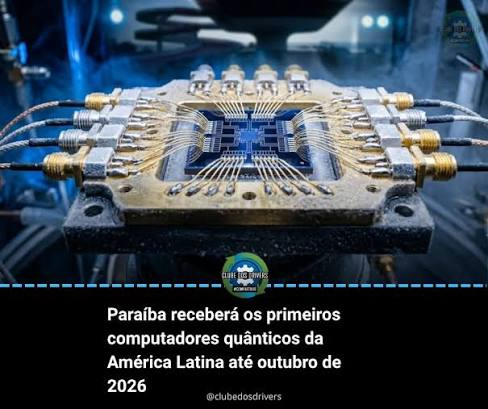
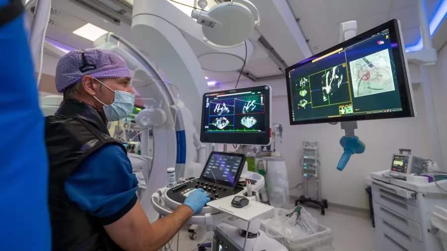

O futuro da Tecnologia chegou ao Brasil
Os primeiros computadores quânticos da América Latina estão sendo montados no Brasil.
O Centro de Computação Quântica da Paraíba (Ciquanta), localizado em João Pessoa,
concluirá até outubro de 2026 a instalação de duas máquinas com capacidades de 20 e 100 qubits

Com um investimento inicial de aproximadamente R$ 150 milhões, o espaço abrigará supercomputadores
capazes de impulsionar avanços em áreas complexas, como inteligência artificial, segurança cibernética e
bancária, logística e previsão de novas moléculas para medicamentos.
IA vira 'GPS do coração' de cirurgia cardíaca, e paciente sai no mesmo dia
Imagine entrar em uma sala de cirurgia cardíaca sem enxergar o coração do paciente. Nada de bisturi abrindo o peito
nem visão direta do músculo pulsando. Só uma tela, um cateter e a promessa de a inteligência artificial mostrar ao médico o caminho certo..

Diferentemente de outras situações, a IA não entra em cena para assumir o controle dos humanos, mas para dar maior segurança a eles em
um ambiente para lá de sensível: o coração de uma pessoa…
Grande fabricante de eletrônicos e aparelhos domésticos no passado, a Philips vendeu sua operação nessas áreas entre 2010 (televisores) e 2021
(eletrodomésticos) e hoje é uma das maiores fabricantes do mundo em equipamentos médicos (ressonâncias magnéticas, ultra-sons, raio-x) e softwares
de leitura de imagem. Dos velhos tempos, restam no portfólio só os dispositivos para cuidados pessoais, como aparadores de pelo.